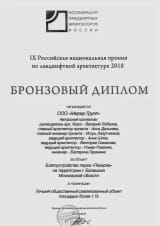

Благоустройство исторической части города Сергиева ПосадаСеребреный диплом в номинации, «Реализованные проекты сохранения и развития градостроительных образовании садово-паркового искусства, создания новой жизни в исторических поселениях»